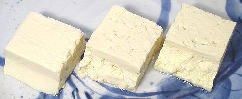
Tofu / Bean Curd
[Tofu (Japan, US); Dofu, Doufou (China); Tubu (Korea); Toad Food
(improper), Bean Crud (improper)]
Basically, bean curd is cottage cheese made by coagulating ground
up strained and cooked soybeans (soy milk) rather than dairy milk. First
appearing during the Chou Dynasty (1132-246 BCE), there are several theories
for its origin, all of which are unadulterated speculation.
The photo specimens are, from left to right, silken, soft and firm
tofu, all by the same manufacturer in Los Angeles.
If you want to know how to make all forms of tofu and every detail about
it, I recommend The Book of Tofu by William Shurtleff & Akiko
Aoyagi - Autumn Press 1975.
In the US tofu has become a focus for laughter due to vegetarians
over-using it and trying to build turkeys out of it for Thanksgiving
dinner - as well as tofu sausages, hot dogs, hamburgers and jerky. Now
I'm not anti-vegetarian, and was a vegetarian for almost the regulation
9 years (though never an "ethical" vegetarian), but I think building
vegetarian imitations of dead animal parts is a little funny, despite
it's long history in Asia. I use various forms of bean curd fairly
regularly, but just can't resist calling it "bean crud".
In most of Asia tofu is used in moderation as a flavor absorbing and
textural ingredient in many interesting dishes, but only occasionally as
a main ingredient and then usually as an appetizer or desert. Consumption
is heavier in parts of southern China, but rice is still the main
staple and tofu an accessory. This is as it should be, as there are still
open questions regarding health impacts from heavy tofu consumption - see
Soybeans and Health for details.
Regular Tofu
Because of the many uses to which tofu is put, there are a number of
ways to make it resulting in different textures. This may be controlled
by choice of coagulant, by draining and/or pressing.
Silken Tofu:
[Kinugoshi (Japan)] This form is made from relatively
thick soy milk and precipitated in tight containers so the whey does not
drain but is incorporated into the tofu. Once set the block is loosened
from the mold into water where it is cut into blocks of the desired size.
The finished tofu is soft and with a totally smooth texture with no
porousness at all. This is a luxurious tofu but it must be noted that
since the whey is not pressed out it includes more of the hormones,
mineral blockers, and toxins soybeans are accused of - so perhaps it
should be eaten on occasion rather than every day.Soft Tofu:
[Momendofu (cotton tofu) (Japan); Tubu Mou (Korea); Lao doufu (China)]
This is the most standard form of tofu in the US and Korea -
kind of an all purpose tofu. In Japan a fair amount of silken tofu is used
but "cotton" still dominates. In Asia this may be called "firm tofu" but
here it's always "regular" or "soft", with firm reserved for what in Asia
is called "dry".
Firm Tofu:
[Dry Tofu; Dou gan (China)] This form is
common in Chinese cooking and not much known in Japan, but a few Korean
recipes also call for this form. It holds up better in stir fried and
stewed dishes than soft tofu. Though the Chinese name means "dry tofu"
it is packed in water just like all the rest. In the US it always
carries the "firm" designation. Extra Firm Tofu:
This form is finally becoming
reasonably common (2018). It is ideal for deep frying, stir frying and
other applications that need a firm, durable tofu. It saves a lot of
time pressing Firm Tofu to remove water. I usually find it in Korean
markets.Extra Soft Tofu:
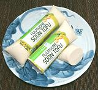
[Sui-dofu (China); Sundubu, Soon Tofu (Korea)]
Similar to Silken Tofu but more so - this form is so soft it must be
eaten with a spoon rather than with chopsticks. It's often so soft that
in China it's ladled out into bowls brought to the tofu shop by
customers. It's a common item in the Korean markets around here packed
in tubs or plastic sausage tubes - often labeled "Tofu Extra Mou" (isn't
there a Korean word for "Extra"?). This form is often used with syrups
and toppings as a desert. As with Silken Tofu, moderation may be
appropriate.
-
Flower Tofu
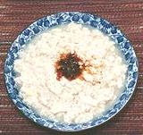
[Huoshui Douhua] This one is very popular in Sichuan, served
with various dips (with various amounts of Chilis in them). You won't find
it in stores, but you can make it yourself at home. See our recipe
Flower Tofu.
Egg Tofu:
This is a savory variety made in Japan by adding raw egg to the soy milk
before adding the coagulant. Not all labeled "egg tofu" is actually tofu
though - some is just egg custard.
Buying & Storing
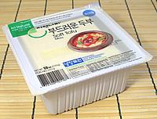
Vast quantities of tofu are manufactured here in Los Angeles and put up
in sealed plastic tubs. Common sizes are 10oz, 13oz, 16oz, 18oz and 19oz.
I have cookbooks that imply a block is as small as 8oz. The Book of Tofu
says 12oz. Recipes invariably call for "one block of tofu". OK lady,
what size is a block of tofu in your neighborhood? You'd think scales
hadn't been invented yet.
When I first bought tubs of tofu many years ago it needed to be used
in just a few days or it would go sour. Sterile packaging has been
improved to the point some brands don't expire for 3 months and probably
last longer.
Tofu tubs should be kept refrigerated at all times. Once opened tofu
should be used up in just a couple of days. It is recommended that opened
tofu be kept refrigerated submerged in clean water that's changed every
day. If tofu smells or tastes at all sour it has turned and should be
discarded. If it's very faintly sour it may be refreshed by cutting into
large cubes and par boiling them in lightly salted water for about 3
minutes.
Some of the tofu made here in Los Angeles, particularly for the
Vietnamese community, is not cut into cubes nor packaged in tubs. It is
shaped kind of like a large dinner roll and wrapped in plastic wrap.
This tofu must be delivered fresh daily and used the same day. It would
still be good for deep frying the next morning if properly refrigerated.
Draining & Pressing:
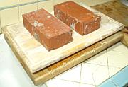
Tofu is just about always drained before use and may be pressed to firm
it up and remove water - particularly if it is to be fried. A convenient
way to drain it is to punch some small holes in the bottom of the tub and
an air hole through the film at the top. Set the tub in a tray with a
spacer under it and refrigerate. Empty water from the tray as needed.
A convenient way to press a small amount of tofu is to prepare the tray
as for draining except remove the top film entirely. Set a full tub of
tofu n top (or an empty tub filled with something heavy). Refrigerate -
the longer it sits the firmer it gets. For larger amounts, and for deep
frying which wants a hard pressing, a rig like that pictured is needed.
Set a board on a shallow slant, cover it with a dish towel, slice the tofu to size and
arrange the slices on the board. Cover with another board and put several
pounds of weights on top of it. Retired cutting boards are excellent for
this purpose. Press a few hours for deep fried tofu, less for other uses.
Silken Tofu is never pressed - that would destroy its texture.
Deep Fried Tofu
- [Agé (Japan);
Zha doufu (China)]
|
Thick Agé
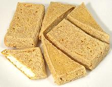
This form is easy to make for anyone with some oil and something to
heat it in. The tofu must be cut to size as desired, then pressed
well to remove most of the water. Generally this is done by spreading
a towel over a slanted board, arranging the tofu over it and covering
it with another board with heavy weights on it.
The outside is crisp and light brown while the inside is white and
spongy. You can eat them as-is, but they are commonly subjected to
further cooking of some sort. While generally put to other uses, these
agé can be stuffed, if the puffy kind aren't commercially
available and the hassle of making them at home is not practical. You
do need to scoop some of the white inside out before stuffing.
The photo shows both the traditional triangular form and the
rectangular form more common today. The rectangular pieces were
3.75 x 2.13 x 0.80 and weighed 2-5/8 ounces. In other words, a 19
ounce block has shrunk to less than 8 ounces - but gained considerable
calories due to oil. The photo specimens were fried quite long and
have a fairly thick crust - shorter frying may be desirable for some
applications.
Details and Cooking.
Deep Fried Soybean Cake
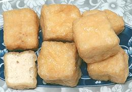
Here in Los Angeles, the many Asian markets carry deep fried
tofu of this type in many shapes and sizes, packed on foam trays or
in plastic bags. They are soft on the outside, never crispy, and
foamy on the inside. They have many uses in stir fries and stews.
The photo specimens were cubes about 1-1/2 inches on a side -
purchased from a large Asian market in Los Angeles (San Gabriel) for
2020 US $2.39 for an 8 ounce package. Ingr: Soy Bean, Soy Bean Oil,
Water, Calcium Sulphate.
Ganmo
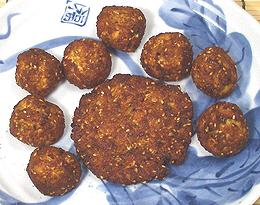
[Gan-modoki (Japan)]
This is the prototype veggie burger - no attempt to make it
taste like beef at this point though. Ganmo are made in the form of patties,
similar to hamburger patties, or balls, similar to meatballs. They are
made of tofu and grated or slivered vegetables, then deep fried in oil
(some people simmer them in a dashi stock instead). I prefer patties to
balls as the balls remain kind of mushy inside. Commercial products are
generally firmer but much heavier than home made.
Details and Cooking.
Agé Pouches & Puffs
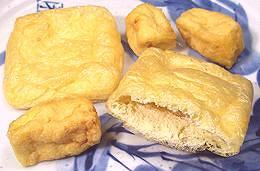
These are commonly purchased commercially (they are available in
markets serving Japanese, Chinese and Vietnamese communities) because
making them yourself is a hassle. To do it right you have to start with
whole dry soybeans because the process is a bit different from regular
tofu, then you deep fry in two different temperatures of oil. They can
be made from commercial tofu in a single pot of oil with careful
temperature control but won't be as light and puffy as when made
right. The photo specimen pouches (13) were 3-3/4 x
3-3/4 inches by 3/4 inch thick and weighed about 1/2 ounce each. The
puffs (14) were various sizes up to 1-1/2 inch.
|
Pressed Tofu
- [Doufu-kan (China)]
This is a form much used in China, but not Japan and I haven't seen any
of it in the Korean markets either. The firmest type of tofu is made and
spread onto cloths. For the thinnest versions a stack of as many as 100
cloths is made. The stack is subjected to very heavy pressure in a screw
press or similar device. This comes in many forms and only some of the
most important are shown here.
|
Pressed Tofu Blocks
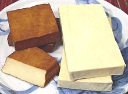
[Stew Bean Curd, Dou Gan]
These blocks of very firm tofu (about as firm as Monterey Jack) are
available in plain (right) and "baked" (left). The baked variety is
coated with various flavorings. The photo specimens were coated with
soy sauce, sesame oil, chili, aniseed and salt The "standard" size is
roughly 2.7 x 2.2 inches and 0.6 inch thick, sold in packages of
4 squares, weighing 6.7 ounces. Other sizes are also found. The plain
photo specimens were 5.1 x 2.7 x 0.7 inches, two to a package
weighing 6-1/4 ounces. This form can be sliced and diced and
used as an ingredient in stir fries, stews, sauces and even salads.
It can stand up to extended cooking. Purchased for 2016 US $2.49 per
6.7 ounces.
Pressed Tofu Sheet
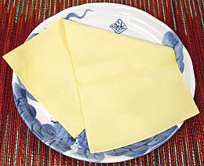
This is the basic pressed sheet, 12-1/2 x 6 x 0.05 inches with the
fabric pattern pressed into both sides. Actual size, of course, varies
with manufacturer and intended use. These sheets were made in China
and shipped frozen to the US - freezing doesn't seem to bother this
stuff at all (not enough water to crystalize). Ingredients: Soybeans,
Water, Salt.
For another brand purchased at the same market (also from China and
shipped frozen) the sheets were 18-1/2 x 9 inches and only 0.015 inch
thick. Ingredients: Soybean, Water.
This stuff feels like fabric and stands up very well to handling -
and takes about 15 minutes of simmering to be tender.
Pressed Tofu Noodles
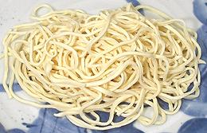
[Taiwan tofu strips]
These are sold fresh (as shown) and dried (usually straight). The fresh
may be seasoned before packaging and will then be light brown in color.
The individual noodles in the photo were about 0.10 inches square
(slightly variable) but they are often a bit wider and more erratic
in size (11).
Pressed Tofu Knots
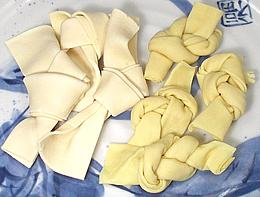
[Dau hu that (Viet)]
These, both by the same company in Los Angeles, were labeled
"Taiwan Soy Sheet Knot" (left) and "Shanghai Soy Sheet Knot" (right)
The Taiwan were tied from a strip 7-3/4 x 2 x 0.05 inches and weighted
1/2 oz each. The Shanghai were tied from a strip 8 x 3-1/2 x 0.015
inches and weighed 1/3 ounce each. Cooking suggestions were,
"Pan fried, stir fried with vegetable, hot pot, marinated"
(11).
|
Tofu Skin
- [Yuba (Japan); Doufu-p'i
(China)]
Expensive in Japan but reasonably cheap in China, this product is
sheets of the skin that forms on top of the cooking pots when making tofu
- though some shops make only the skins and skip the tofu. The skin is
cut at the edges of the pot and a stick is run under the center. The
stick is raised leaving the skin draped down on both sides. It is now
ready for drying or whatever other preparation will be used.
|
Bean Curd Skin - Flat Dried
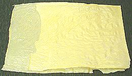
Found in Chinese markets but also commonly used in Japan this form is
less common than others due to the obvious logistic problems in
transport and storage. These sheets are extremely thin and brittle -
they'll crumble if you look at them wrong. The photo specimen was 21
inches long (unfolded) 7-1/2 inches wide and 0.010 (one 100th) inch
thick. With a 5 minute soak it becomes rubbery and slightly elastic,
suitable for wrappings and similar uses. Flavor is, as with most tofu
products, fairly bland, but it will absorb flavors from other
ingredients.
Bean Curd Skin Sticks
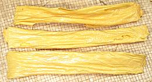
[Fu zhú (China lit "Tofu Bamboo")]
These bunched up sticks of tofu skin have been the most common
form found in Chinese markets but seems to be being overtaken by the
flat sheets. It's more durable than sheet, but not a whole lot.
Sticks are usually broken up and given a long soak before adding to a
recipe. Some spots will be too thick to soak soft and must be picked
out and discarded. The photo specimens were 10-1/2 inches long and
weighed 3/4 ounce each. Thickness of the leaves was about 0.015 inch.
Fresh Tofu Skin Pouches
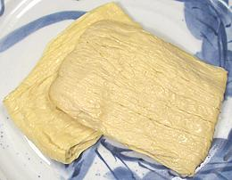
[Banh hu ky, Tau hu ky (Viet); Dòu baõ (China);
Fresh Tofu Bamboo]
These aren't really pouches as they are just a folded flat
roll and the material is too fragile to unroll. They can be used
sliced. The photo specimens were 4-1/2 inches long (twice that
unfolded), 3-1/2 inches wide and weighed 2-1/2 ounces each. The
leaves they were rolled from were 0.010 (one 100th) inch thick.
Cooking suggestions were, "Pan fried, stir fried with vegetable,
hot pot, marinated" (11). I have recently
purchased these from a tub at a large Asian market in Los Angeles
(San Gabriel) for 2020 US $0.68 / pound. They were about 3 x 3 x 0.65
inches and wighed about 3.3 ounces each. The layers were about 0.03
inch thick.
|
Frozen Tofu
-
[Thousand Layer Tofu]
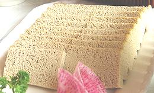
This form is often served as an appetizer but can be used wherever
its porous nature would be good for holding sauces or dips. When tofu is
frozen the water forms large crystals which leave a lot of holes when they
melt and drain out. It leaves the tofu fairly firm and with a slightly
yellow color. The "thousand layer" name comes because the crystals follow
the texture which in pressed tofu gives a layered look where there are
actually no layers.
This form is generally made at home from regular soft tofu. The
relatively slow freezing in a home freezing compartment encourages
large ice crystals thus desirably large holes. It is thawed and drained
(and sometimes squeezed) before using.
Photo by J Samuel Burner distributed under
Creative Commons
Attribution 2.0 license.
Dried-Frozen Tofu
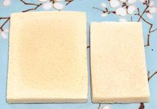
[Koyadofu (Japan); Freeze Dried Tofu (incorrect)]
This is pretty much a Japan-only specialty. Some time between 1550 and
1650 Two traditional methods were developed, taking advantage of bitter
winter cold, but today this product is made in large industrial
facilities. First Frozen Tofu is made (se above), then the water is
wrung out and the Tofu is dried. This differs from the Vacuum Freze
Drying process, thus is correctly called Dried-Frozen Tofu. This tofu
is extremely light weight and will last for 6 to 8 months in a sealed
package kept in a cool environment away from sunlight. Absurdly expensive.
Details and Cooking.
Fermented Tofu
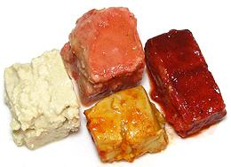
[Preserved Tofu, Rotten Tofu, Fermented / Preserved Bean Curd; Doufu ni
(China); chao (Vietnam)]
This is sort of the tofu equivalent of aged soft cheese (think Roquefort
or blue cheese) and is used throughout China and Southeast Asia as an
ingredient and as a table condiment. Your average Asian market will have
a slew of brands and varieties. If you like pungent dairy cheese you'll
probably like this stuff too.
Blocks of tofu, usually about 1-1/2 inch in the longest dimension, are
fermented by a special process (traditionally under straw) and then
packed in liquid with flavoring ingredients.
Details and Cooking.
Stinky Tofu
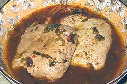
[chou doufu (China)]
This is a form of very moldy fermented tofu, often of slightly purplish
color, popular in China, particularly Sichuan and Hunan but also in Hong
Kong, Taiwan and Indonesia. It is made by fermenting as long as several
months in a brine made from salt, fermented milk, vegetables and meat,
which may also include shrimp, amaranth greens, mustard greens, bamboo
shoots and herbs.
The stench, which even enthusiasts admit smells like rotting garbage,
is noticeable for blocks around stalls and restaurants where it is cooked
and served (generally at night). It is most often pan or deep fried but
the photo specimen is in Sichuan Mala sauce.
Photo distributed under Creative Commons
Attribution-ShareAlike v3.0 Unported.
Tofu Animals
This page couldn't be complete without various attempts, both ancient
and modern, to make tofu imitations of animal parts. The Chinese are very
fond of creating exact replicas of whole animals out of tofu skin but
these are mercifully not much available in the US.
|
Tofu Chicken - Shanghai Vegetarian
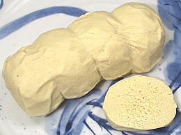
[Buddha's Chicken, Thit Ga Chay (Viet)]
This product is usually made by rolling up fresh tofu skins,
compressing in a cloth wrapping and steaming. The cloth is then
removed. This process makes the roll very firm with a somewhat
chicken-like texture. The texture is pleasing but making it taste
like chicken (or not) is up to the cook. The photo specimen was
5-1/4 inches long, 2-1/8 inches diameter and weighed 8-1/4 ounces.
Ingredients: soybean, water, salt. Cooking suggestions, "Pan fried,
stir fried with vegetable, hot pot, or soup for flavor"
(11).
Tofu Chicken - Oval Soy Patty, Vegan

Not strictly tofu, except for tofu skin, but all soy, this "chicken"
is poured into a thin plastic mold, where it solidifies. Then it
is shrink packaged, mold and all, and frozen. The package says it can
be used in any recipe calling for chicken. It takes little cooking,
so is fine for stir fries, but can also take long cooking without
disintegrating. Texture is similar to undercooked chicken,
a little chewy. Taste is mild, remeniscent of chicken breast, but
with a somewhat beany undertaste. Ing: Water, textured
soybean isolate, textured soybean protein, soy beancurd skin,
soybeean oil, soy sauce, sea salt, sugar cane juice, spices
(mushroom extract, black pepper).
Tofu Duck - Buddha's Duck
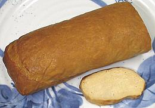
This product is usually made by rolling up fresh tofu skins, compressing
in a cloth wrapping and steaming. The cloth is then removed. This
process makes the roll very firm with a somewhat duck-like texture.
The texture is pleasing and the manufacturer has done a decent job of
imparting a duck-like flavor. I rather liked this one. The photo
specimen was 7 inches long, 2-3/4 inches across and weighed 15-1/2 ounces.
Ingredients: Soybeans, Salt, Sugar, Soy sauce, Soybean oil. This
manufacturer (10) makes a chicken the same shape,
size and ingredients but lighter in color.
Tofu Chitterlings
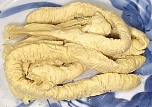
The label, "Fresh Tofu Sausage", has to be a misnomer, euphemism or
mis-translation - these are clearly tofu chitterlings (pig intestines) -
but they mercifully don't have the smell. Vegetarian Soul Food, anyone?
These were made of very thin, somewhat gooey (how appropriate) tofu skin
rolled up. Individual chitterlings were about 12 inches long, 7/8 inch
diameter and weighed 1-5/8 ounces. The leaves they were rolled from
were 0.010 (one 100th) inch thick.The cooking suggestions were,
"Pan fried, stir fried with vegetable, hot pot, marinated". Available in
Asian markets in Los Angeles (11).
Tofurkey
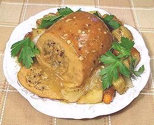
Tofurkey is an imitation turkey roast generally designed as a vegan
stand-in for a roast turkey dinner. It may or may not resemble an
actual turkey in shape or taste. Tofurkey is a generic term, Tofurky
is a registered trademark of Turtle Island Foods (
15). The photo is of their well known Tofurky, 4-3/4 inches long,
3-3/4 inches diameter and weighing 1 pound 12 ounces, and mercifully
not molded into the shape of a real turkey. Ingredients: far too many
to list here (includes roll, stuffing and gravy) but the basic roll
includes: water, vital wheat gluten, organic tofu, canola oil, natural
vegetarian flavors, shoyu sauce, corn starch, white bean flour,
garbanzo bean flour, lemon juice, onion powder, salt, calcium lactate
from beets. For Celiac sufferers, it's a "Death Roll".
Details and Cooking
Tofu Cold Cuts
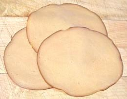
This is a tough one to do well. It's quite similar to the baked
version of Pressed Tofu Blocks, but with a lot
more ingredients to cover up the soy taste and make it more like meat.
The photo specimens are Tofurky brand (15) Hickory
Smoked Deli Cuts, 4 inches diameter and 0.04 thick. They're a credible
effort - but certainly no bologna (too dry for one thing).
Ingredients: vital wheat gluten, organic tofu, canola oil, natural
vegetarian flavors, shoyu sauce, corn starch, white bean flour,
garbanzo bean flour, lemon juice, calcium lactate from beets.
Tofu Italian Sausage
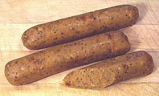
The photo specimens are Tofurky brand (15) and are
the best tofu sausages I've tried to date. They're a bit overspiced
to cover the basic blandness, but have decent texture (though still
a bit pasty) and the color is lighter than others I've tried. They
brown decently if fried and are generally edible. Ingredients:
organic tofu, vital wheat gluten, canola oil, high oleic safflower
oil, water, shoyu sauce, sun dried tomatoes, textured wheat protein,
basil, black pepper, spices, granulated garlic, salt, chili peppers.
Soy Dogs
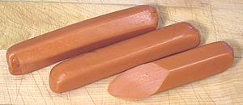
"Smart Dogs" (16) - you will not mistake these for
Ballpark brand franks. They have a slightly chemically taste and a
paste texture, but with enough good mustard and chopped onions they'll
stand in for a boiled hot dog (they recommend hot water cooking or
nuking, not frying or grilling). These don't claim to be tofu but I'm
putting them here with the other soy animals anyway. Ingredients:
water, soy protein isolate, wheat gluten, evaporated cane juice, less
than 2% of natural flavors (from vegetable sources), natural smoke
flavor, garlic powder, paprika oleoresin, yeast extract, xanthan gum,
guar gum, carrageenan, fermented rice flour, salt, potassium chloride.
|
Notes:
-
T10 - Yuan Shian Vegetarian Food, 13759 Amar Road,
La Puente, CA 91746 - 626-337-6654.
- T11 - Asia Foods Company, Baldwin Park, CA 91706 -
626-962-9795.
-
T13 - House Foods America Corp., Garden Grove, CA
92841.
-
T14 - Dong Phuong Tofu, Westminster, CA 92683.
-
T15 -
Turtle Island Foods PO Box 176, Hood River, OR 97031 - 541-386-7766 -
info@tofurky.com
-
T16 -
Lightlife Foods 153 Industrial Blvd., Turners Falls, MA 01376 -
1-800-765-3279.
bp_soytz.html 2007 - www.clovegarden.com
©Andrew Grygus - agryg@aaxnet.com - All photos not
otherwise credited are © cg1 -
Linking to and non-commercial use of this page permitted